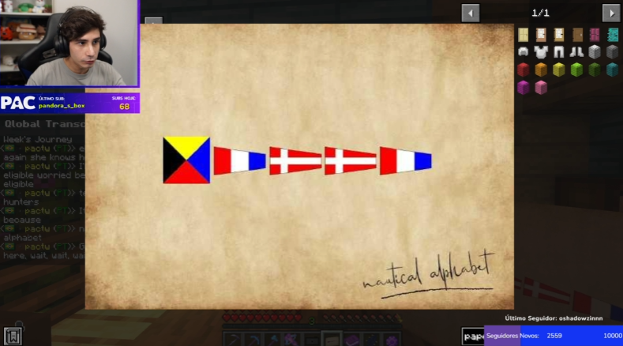
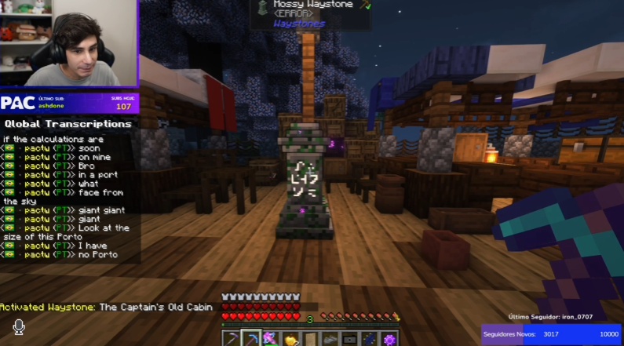

Principais Acontecimentos
Pac
Pac depois de acordar, vai cuidar do seu minime, mas no processo vê que tem um baú no andar de baixo. Dentro tinha um livro com enigma, com o resultado do tal enigma vai na casa de Walter Bob, lá acha mais um livro, dessa vez com a ultima carta, que não foi terminada, de Walter Bob para sua família, junto do livro havia uma imagem com coordenadas escritas com alfabeto náutico
 e dentre esses livros e imagem tinha uma carta, dizendo que a segunda parte daquela localização estava com um velho amigo, o Caçador.Chegando na casa do caçador, Tazer achou mais um báu abaixo da doca, como dizia numa das cartas que tinha achado na casa de Walter Bob, nos achados tinha a outra coordenada que precisávamos.
Também no báu, tinha mensagem de um capitão, que dizia que a Esperança havia isso perdida, mas se quisesse ter a chance de encontra-lá era só seguir as coordenadas.
Pac então pega tudo que precisa e vai atrás das coordenadas, depois de alguns minutos e muito andar e velejar, ele acha em meio as pedras e espinhos do mar, o Hope, um navio naufragado em meios as pedras, abandonado e mastigado por o tempo.

No barco tinha cartas deixadas por uma criança, dando tchau ao tão querido barco que levava a esperança de uma família, junto da carta tinha um desenho da suposta criança dizendo que estava entediada, também tinha um mapa que marcava um X no local exato onde Pac estava, mas saindo daquele X havia uma linha, como uma rota, mostrando de onde saíram.
Ele juntou suas energias e curiosidade que corria nas suas veias e seguiu a rota, depois de velejar por alguns minutos, ele avista no horizonte, um porto, o porto da onde Hope saiu.  No porto tinha baús vazios que outrora já foram cheios, e na cabine principal a mensagem "Eles não vão ganhar", podia ser vista, num dos baús que guardavam escritas de outros tempos, tinha uma mensagem que foi deixada pra trás dizendo que infelizmente quem leu aquilo chegou tarde demais pra achar eles alí, mas que era só achar um ponto de comunicação ativo que conseguiriam contata-los, e na parte final dizia que ainda estão livres rodando por ai.
Pac não sabe como achar base ativa, e não tinha nenhuma informação que o ajudaria. Ali então acabou sua jornada como Dedetive como ele mesmo se nomeou. No resto do dia no servidor fez uma defesa contra Cell na Ilha Chume Labs/Armazém da Galera.
Pac imitando o Cell
— 🇵🇸ラリー✩QSMP🥚🇧🇷 (@alarissa_tt) October 30, 2023
(demorando pra postar pq to cuidando da gatinha) pic.twitter.com/1IjBLGbiT9
Cell(bit)
Mano Cellbit acordou, loco surtado como já te falei minha lulu, então não vou escrever aquilo tudo dnv, mas ontem quando ele tava prestes a sair, Bad foi até a casa dele e tentou convencer ele de aquilo não tinha sentido e ele só tava afastando quem amava ele, foi uma conversa dura, mas como sabemos o mano Cleber não deu tanto ouvidos pro Bad, depois de sair do castelo, nosso demônio sem rosto e olhos brancos disse "It's hurt" e ficou em silêncio por um tempo.
Anúncios do QSMP
Dias atrás a estação que fica na Ilha Quesadilla fechou para reforma ou algo assim, Quackity em umas das lives disse como pequeno spoiler que dia 4/11 iriamos fazer uma pequena viagem, acontece que depois daquele dia, alguns posts saíram na QuackityStudios, dois ao todo no momento atual, um da Tallulah, e outro do nosso pequeno Richarlison, como está abaixo.
Não sabemos oq vai acontecer, mas agora pelo menos temos alguma esperança quanto a recuperar os Ovos.
04 de Novembro ás 17:00 BRT
QSMP Main Event 🥚
— Quackity Studios (@QuackityStudios) October 30, 2023
Saturday, November 4, 2023
1 PM PST
Enjoy the islands 🏝️
Do not miss it.#QSMP pic.twitter.com/iYrRn82RDp
Halloween
Dia 31/10 terá uma festa de Halloween no servidor, provavelmente nada muito grande por conta do evento de Sabádo, mas será divertido e barulhento como sempre, provavelmente todos Ilhéus vão usar fantasias. UUUUUUUUH